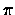

| Globetrotter |
As a member of an ACM programming team you'll soon find yourself always traveling around the world: Zürich, Philadelphia, San José, Atlanta,... from 1999 on the Contest Finals even will be on a different continent each year, so one day you might get to Japan or Australia.
At the contest site it would be interesting to know how many miles you are away from home. For this sake, your job is to write a program to compute the geographical distance between two given locations on the Earth's surface.
We assume that the Earth is a perfect sphere with a radius of exactly 6378 km. The geographical distance between A and B is the length of the geodetic line segment connecting A and B.
The geodetic line segment between two points on a sphere is the shortest connecting curve lying entirely in the surface of the sphere.
The value of pi () is approximately 3.141592653589793.
City List
The city list consists of up to 100 lines, one line per city. Each line will contain a string ci and two real numbers lati and longi, representing the city name, its latitude and its longitude, respectively.
The city name will be shorter than 30 characters and will not contain white-space characters. The latitude will be between -90 (South Pole) and +90 (North Pole). The longitude will be between -180 and +180 where negative numbers denote locations west of the meridian and positive numbers denote locations east of the meridian. (The meridian passes through Greenwich, London.)
The city list will be terminated by a line consisting of a single ``#".
Query List
Each line will contain two city names A and B.
The query list will be terminated by the line ``# #".
If one of the cities in the query didn't occur in the city list, print a line saying ``Unknown" instead.
Ulm 48.700 10.500 Freiburg 47.700 9.500 Philadelphia 39.883 -75.250 SanJose 37.366 -121.933 NorthPole 90 0 SouthPole -90 0 # Ulm Philadelphia Ulm SanJose Freiburg Philadelphia Freiburg SanJose Ulm Freiburg SanJose Philadelphia Ulm LasVegas Ulm Ulm Ulm NorthPole Ulm SouthPole NorthPole SouthPole # #
Ulm - Philadelphia 6536 km Ulm - SanJose 9367 km Freiburg - Philadelphia 6519 km Freiburg - SanJose 9412 km Ulm - Freiburg 134 km SanJose - Philadelphia 4023 km Ulm - LasVegas Unknown Ulm - Ulm 0 km Ulm - NorthPole 4597 km Ulm - SouthPole 15440 km NorthPole - SouthPole 20037 km